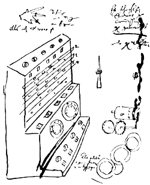

Les précurseurs
La machine de Schickard
•lhelm Schickard
•Première machine à calculer
•On ne connaît que la description qu'il en donne dans une lettre à Képler, accompagnée de schémas
•Détruite quelques années plus tard dans un incendie

Les précurseurs
La pascaline
•Blaise Pascal
•1642
•Machine d’arithmétique
•Calculatrice mécanique
•Initallement créé pour les impôts.

Les précurseurs
Machine analytique
•Charles Babbage
•1834
•Machine à calculer programmable
•Jamais réaliser sauf prototype